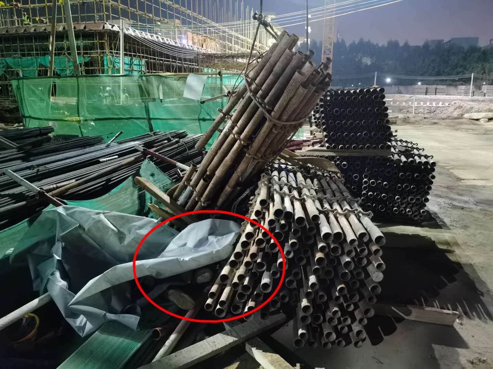

东莞鹏龙光电扩建项目“11·29”起重伤害事故调查报告
2019年11月29日下午5时许，位于东莞市石碣镇金沙路的东莞鹏龙超精密光学智能制造及研发扩建项目工地内发生一起起重伤害事故，事故造成一名在场工人死亡。事故发生后，广东省住房和城乡建设厅委托东莞市住房和城乡建设局，对事故责任单位广东宏达建设工程有限公司的安全生产条件进行核查，核查结果指出广东宏达建设存在大量不满足安全生产条件的问题。为此，广东省住房和城乡建设厅对广东宏达建设的《安全生产许可证》从2020年5月12日至6月10日进行暂扣。近日，广东东莞市应急管理局公布了此起起重伤害事故调查报告。
一、基本情况
（一）工程项目情况
1、工程名称：东莞鹏龙超机密光学智能制造及研发扩建项目1号厂房、2号厂房、4号办公楼、5、6号员工宿舍、7、8号高职宿舍（以下简称鹏龙工程）。
工程地点：东莞市石碣镇四甲村。
工程内容：东莞鹏龙超精密光学智能制造及研发扩建项目1号厂房、2号厂房、4号办公楼、5、6号员工宿舍、7、8号高职宿舍建筑工程、防雷工程、雨水排水工程及排水管预埋套管工程。
工程总建筑面积为175344.5平方米，总投资额为20800万元。该工程为广东省重点项目、东莞市重大项目，于2019年10月18日开工，目前施工进度主体结构施工。
本工程监理单位为东莞市建设监理有限公司，房屋建筑工程监理甲级。
发包方：东莞鹏龙光电有限公司
总承包方：广东宏达建设工程公司
2、工程分包情况：
总承包方：广东宏达建设工程有限公司
劳务分包方：东莞市兴益建筑劳务分包有限公司
于2019年11月15日双方签订工程（劳务）分包合同，承包范围：合同约定东莞鹏龙超精密光学智能制造及研发扩建项目1号厂房、2号厂房、4号办公楼、5、6号员工宿舍、7、8号高职宿舍（木工作业分包、钢筋作业分包、脚手架作业分包、砌筑及抹灰作业分包、混凝土作业分包等综合工作。
合同总价7400万人民币。
（二）事故相关单位及人员情况
1、东莞鹏龙光电有限公司（发包方），单位地址：东莞市石碣镇四甲第二工业区，法定代表人：吕子鹏，统一社会信用代码：9144190079770475XW，类型：有限责任公司（台港澳法人独资），经营范围：生产和销售新型平板显示器件、数字照相机关键件；道路普通货运。
2、广东宏达建设工程有限公司（总承包方，单位地址：东莞市莞城区天宝路22号之一，法定代表人：袁斌，统一社会信用代码：91441900732152720D，类型：有限责任公司（自然人投资或控股），经营范围：房屋建筑工程施工总承包一级，机电设备安装工程专业承包二级，建筑装修装饰工程专业承包二级，消防设施工程专业承包二级，建筑装饰工程设计专项乙级，消防设施工程设计专项乙级（凭建筑业企业资质证书经营）；维修、保养：机电设备；承装、承修、承试供电设施和受电设施；仓储服务；物业租赁。持有安全生产许可证，编号：（粤）JZ安许证字[2017]110294延，许可范围：建筑施工，有效期：2017年2月16日至2020年2月16日。
3、东莞市兴益建筑劳务分包有限公司(劳务分包单位)，单位地址：东莞市东坑镇丁屋村骏达西路松源创新科技城A栋三楼3A10室，法定代表人：廖勇，统一社会信用代码：914419007962565458，类型：有限责任公司（自然人投资或控股），经营范围：建筑劳务分包。持有安全生产许可证，编号：（粤）JZ安许证字[2019]110302延，许可范围：建筑施工，有效期：2019年3月14日至2020年3月14日。
4、陈刚（死者），男性，汉族，出生于1973年7月10日，身份证住址重庆市武隆区，为东莞市兴益建筑劳务分包有限公司普工（已签订劳动合同），在工地负责搭建内架支撑。
5、袁斌，男性，汉族，出生于1967年4月27日，身份证住址广东省东莞市莞城区，为广东宏达建设工程有限公司法定代表人。
6、李坤，女性，汉族，出生于1966年10月2日。其为广东宏达建设工程有限公司员工，于2019年8月26日任命为本次鹏龙工程的项目负责人，持有一级注册建造师资格证书，证号:粤144141633161。
7、廖勇，男性，汉族，出生于1985年1月6日，身份证住址重庆市铜梁县维新镇，为东莞市兴益建筑劳务分包有限公司法定代表人。
8、匡永平，男性，汉族，出生于1976年2月29日，身份证住址四川省合江县大桥镇。其为东莞市兴益建筑劳务分包有限公司员工（已签订劳动合同），为东莞市兴益建筑劳务分包有限公司本次鹏龙工程的现场负责人。
9、廖加永，男性，汉族，出生于1985年1月18日，身份证住址重庆市开县高桥镇，为东莞市兴益建筑劳务分包有限公司普通员工（已签订劳动合同）。
10、余磊，男性，汉族，出生于1988年4月12日，身份证住址安徽省霍邱县众兴集镇，为东莞市兴益建筑劳务分包有限公司员工（已签订劳动合同），负责本次鹏龙工程的2号塔吊机指挥员。
11、曾大华，男性，汉族，出生于1990年4月7日，身份证住址重庆市秀山县梅江镇，为东莞市兴益建筑劳务分包有限公司员工（已签订劳动合同），负责本次鹏龙工程的2号塔吊机操作员，持有建筑施工特种作业操作资格证，操作类别：塔式起重机起重司机，证号：粤S042018000091T，使用期自2018年4月8日至2020年4月7日。
（三）涉案设备情况
塔式起重机：型号规格QTZ80（TC5610-6），出厂编号1012TC01401608，制造单位：中联重科股份有限公司，持有由东莞市建设工程安全监督站签发的起重机械使用登记牌（使用登记号：粤SA-05-1911-1005），安装告知日期：2019年10月21日，检验日期：2019年10月29日，工地自编号：2#，产权属于东莞市川航建筑安装工程有限公司，该塔吊本次施工由广东宏达建设工程有限公司向东莞市川航建筑安装工程有限公司租赁进场施工的，
（四）现场勘查情况
事故发生位置处于鹏龙工程6号楼与8号楼之间的2#号塔吊现场事故发生前正进行钢管的吊运作业，据调查组人员现场调查，该次吊运的钢管为模板内撑系统所使用的立杆，原本是用于6号楼搭设模板支撑使用的，由于数量过多，就将多余部分吊运到8号楼南面的材料堆放区进行临时存放。
在吊塔吊钩下方吊钩立杆材料脱滑落连同围栏（围栏为钢管搭建）倒在死者身上的位置。

二、事故发生经过和事故救援情况
（一）事故发生经过
综合现场勘察及目击者笔录事故调查组分析：2019年11月29日下午5时许鹏龙工程在位于6号楼与8号楼之间的2#号塔吊现场由东莞市兴益建筑劳务分包有限公司的现场负责人匡永平指派进行吊运作业，2号塔吊操作人员曾大华把材料钢管从6号楼3层吊运钢管到8号楼南面的地面上，其在6号楼由余磊进行信号指挥，8号楼地面上由廖加永进行信号指挥，在运输到接近8号楼地面时（约离地两米），吊塔从快速档减速低速档过程中，陈刚看到起吊物快下降到地面，提前接近降落区域接货（起吊物和围栏中间区域），在旁的廖加永发现起吊物的立杆振动了一下，马上叫陈刚离开并用对讲机叫塔吊操作人员曾大华停下，由于事发突然陈刚慌乱躲避，跑动时安全帽脱落，头部撞到旁边的围栏后陈刚摔倒水泥地板上，廖加永马上跑过去看了一下发现陈刚头部出血受伤，叫了几声并无回应，马上跑开呼叫在场工人来帮忙，同一时间立杆脱钩滑落导致起吊物钢管材料倾倒在陈刚身上。随后，在场人员拨打120，在120救护车到场后宣布陈刚已经死亡。
（二）事故救援和善后处理情况
接到事故报告后，石碣应急管理分局、石碣镇公安分局、石碣医院、石碣镇住建局立即赶赴现场，了解事故发生经过及现场情况，协调事故善后处理。石碣应急管理分局、石碣镇公安分局、石碣住建局组织了相关人员进行询问笔录，并责令对事故现场暂时停止作业处理。
事故发生后广东宏达建设工程有限公司和死者陈刚家属进行协商，于2019年12月10日与陈刚家属达成调解，事故造成损失共约208.32万元，事故善后处理工作处置及时、有效。
三、事故造成的人员伤亡和直接经济损失
（一） 事故伤亡情况
事故造成一人死亡。陈刚（死者） ，男性，汉族，出生于1973年7月10日。身份证住址重庆市武隆区。
石碣公安分局出具的《居民死亡医学证明（推断）书》陈刚的死亡原因为颅脑损伤致死。
（二）直接经济损失
据统计，该起事故造成直接经济损失208.32万元。
四、事故原因和事故性质
为进一步查明事故的原因、性质和类型，事故调查组进行了调查询问取证工作，对事故现场进行了详细的勘查，收集和掌握事故相关材料，查清了事故原因和性质。
（一）事故直接原因
陈刚在起吊物未完全落地停稳时，违反操作规程提前接近起吊物下降的危险区域，故在起吊物出现滑钩危险情况时未能与起吊物保持有效的安全距离，导致其慌乱躲避头部撞到旁边围栏钢管伤重死亡。
根据中华人民共和国国家标准《塔式起重机安全规程》GB5144-2006中第11.1点塔机的操作使用应符合JG/T 100的有关规定。
依据塔式起重机操作使用规程(JG/T100-1999)5.2.22点起升或下降重物时，重物下方禁止有人通行或停留。
广东宏达建设工程有限公司制定的《塔吊安全操作规程》第16条：塔吊作业时，起重臂和重物下方严禁有人停留、工作、通过 。
综上所述,陈刚在起吊物未完全落地停稳时接近起吊物下降区域的行为属于违规作业。
（二）事故间接原因
1、陈刚佩戴的安全帽未系帽绳，导致跑动时安全帽脱落，未起到头部保护作用。
2、东莞市兴益建筑劳务分包有限公司未督促从业人员落实遵守安全操作规程，在进行吊装作业时所安排安全管理人员未进行有效现场安全管理，确保操作规程的遵守和安全措施的落实。
3、信号指挥员廖加永，在地面指挥塔吊吊物下降时，未能及时发现并制止周边人员回避塔吊吊物，导致滑钩时附近的人陈刚受到惊吓慌乱回避撞到头部受伤。
（三）相关单位、人员履职情况
1、广东宏达建设工程有限公司，事故发生后，事故调查组通过查阅档案现场视察对广东宏达建设工程有限公司的安全生产履职情况进行检查，该企业已履行制定安全生产责任制、制定了安全生产规章制度和塔吊安全操作规程、配备安全生产管理人员、制定本单位安全生产教育和培训计划、制定生产安全事故应急救援预案并开展演练。已建立安全生产事故隐患排查治理制度并进行记录。查阅对陈刚的培训记录，分别在2019年11月27、28日对陈刚进行的安全教育记录、以及11月28日的新工人入场三级安全教育记录。在与东莞市兴益建筑劳务分包有限公司签订的《工程（劳务）分包合同》中有明确双方的安全生产管理职责。通过档案反映，广东宏达建设工程有限公司出示的档案中培训记录、应急演练记录、隐患排查记录等记录有对分包单位东莞市兴益建筑劳务分包有限公司进行了统一协调管理的职责。
2、袁斌，通过查阅资料，发现广东宏达建设工程有限公司主要负责人袁斌按照规定履行了建立健全本单位安全生产责任制、组织制定本单位的安全生产规章制度和操作规程、组织制定本单位生产教育和培训计划、保证单位安全生产投入的有效实施、督促检查单位的安全生产工作，组织制定并实施单位生产安全事故应急救援预案等相关的主要负责人职责。
3、东莞市兴益建筑劳务分包有限公司，事故发生后，事故调查组通过查阅档案现场视察对东莞市兴益建筑劳务分包有限公司的安全生产履职情况进行检查，东莞市兴益建筑劳务分包作为劳务分包方，在鹏龙工程施工期间安全管理应依照广东宏达建设工程有限公司制定的安全生产制规章制度和操作规程等执行，配合参与广东宏达建设工程有限公司的安全教育培训、隐患排查等安全管理工作。但在实际履行上未能有效对从业人员在进行吊装作业时进行有效现场安全管理，确保操作规程的遵守和安全措施的落实。
4、廖勇，东莞市兴益建筑劳务分包有限公司的主要负责人按照规定履行了建立健全本次建设项目生产责任制、组织制定本单位的安全生产规章制度和操作规程、组织制定本单位生产教育和培训计划、保证单位安全生产投入的有效实施、督促检查单位的安全生产工作，组织制定并实施单位生产安全事故应急救援预案等相关的主要负责人职责。
（四）事故性质
经事故调查组调查认定，石碣镇“11.29”一般起重伤害事故是一起一般生产安全责任事故。
五、事故责任认定及处理建议
1、陈刚安全意识薄弱，佩戴的安全帽未系帽绳,未遵守广东宏达建设工程有限公司制定的《塔吊安全操作规程》，提前进入塔吊起重物下方危险区域属于违章作业，对本次事故负有责任。鉴于陈刚在事故中死亡，建议不追究其责任。
2、东莞市兴益建筑劳务分包有限公司在进行吊装作业时从业人员违规操作，未能服从承包单位安全管理导致发生事故，未能确保作业现场安全管理，确保操作规程的遵守和安全措施的落实，未采取有效的技术管理措施、及时发现并消除事故隐患。因此，经调查认定，东莞市兴益建筑劳务分包有限公司对本次事故负有责任。建议由应急管理部门依据《中华人民共和国安全生产法》等有关法律法规对其进行行政处罚。
3、信号指挥员廖加永，在地面指挥塔吊吊物下降时，未能发现并及时制止周边人员回避塔吊吊物，导致滑钩时处于附近的陈刚受到惊吓慌乱回避跌倒导致事故发生，对事故负有责任。建议东莞市兴益建筑劳务分包有限公司对廖加永进行内部处理。
（三）其他法律责任
事故涉及法律责任，如构成民事侵权等责任，建议当事各方通过法律途径解决。
六、事故防范措施及建议
为防范和杜绝类似生产安全事故的发生，确保生产安全，现提出以下整改措施：
1、建设、监理、施工单位要加强对起重机械、模板、脚手架等危险性较大的分部分项工程的实施和管理。尤其要落实好现场安全监督措施，对发现的安全隐患要切实整改。
2、施工单位及各分包单位要落实三级安全教育，特别要重视现场一线作业工人的安全教育，严格按照技术标准、施工方案、操作规程施工作业，杜绝和减少现场的“三违”行为。
3、强化各工种的安全技术交底及警示学习，针对一些工人平时较为忽视的行为加以提醒，强调如何正常使用安全防护设备，如何提前识别风险等。
4、东莞市兴益建筑劳务分包有限公司加强施工日常检查及排查，检查要全面、细致，一定要排查安全设施是否到位。发现安全隐患坚决停止施工作业，即时整改，减少和杜绝安全事故发生的可能性。
5、广东宏达建设工程有限公司建立有效运用的安全监管体系，对施工现场安全严加监管。
原文编辑: EHS资讯
原文链接: https://ehsinfo.cn/2020/05/14/东莞鹏龙项目起重事故调查报告.html
版权声明: 转载请注明出处(必须保留作者署名及链接)